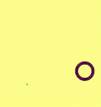
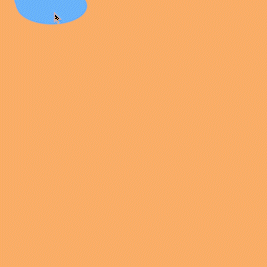

MP2 Writeup
Overview & Usage
For MP2, I created six different sketches of increasing complexity using the p5.js library. The first sketch is static and shows some computational complexity through by using "while" loops to create multiple circles. The second sketch includes elements of randomness by changing the size and color of the circles every time the page is refreshed. The third sketch is a infinitely bouncing ball. For fun, I also made the color of the ball change to different colors. The fourth sketch allows people to interact with the art by moving the mouse, which creates circles of different sizes depending on the speed of the mouse. The fifth sketch uses the p5.sound library to play and stop the "Happy Birthday" song whenever the mouse is clicked. Finally, the sixth sketch is a combinational of audio and visual elements. As the user moves their mouse to the right, the frequency of the sound increases. As the mouse moves to the bottom of the screen, the amplitude of the sound increases. Users can click to start and stop the sound. Meanwhile, an ellipse follows the mouse and changes shape depending on the intensity of the frequency and amplitude.

Development Process
I started this gallery by first working on each of the sketches individually and in order of difficulty. It took a while to get used to the p5.js editor, but the reference library really helped throughout the process. Once I was done with each of the sketches, I tested to make sure they worked locally on my computer and hosted through github pages. Then, I would move on to the next sketch.
Sketch 1: First, I focused on creating one shape, a circle, in the p5.js editor. Then, I watched Coding Train tutorials. It helped me figure out how to make multiple circles using "while" loop iterations. Finally, I changed the color and other visual elements. This sketch creates a series circles centered vertically on the window. The circles to the right get consecutively larger and thicker in strokes.
Sketch 2: For this sketch, I built on the previous static art from sketch 1. I especially had fun trying different RGB codes. With the "random()" function, I could specify a maximum number to narrow the resulting color possibilities. This sketch is similar to sketch 1 except the number of circles, size, and color randomly change when the page is refreshed.
Sketch 3: By this point, I wanted to continue the theme of using circles. But instead of only changing when the page is refreshed, the circle in this sketch continually changes color. I set a maximum limit to the random RGB codes so the circle color is changes between different types of purples, blues, and reds. Unlike the previous two, sketch 3 is an infinite loop, where one circle moves around and "bounces" off the window edges. I had trouble with the positioning and making the circle bounce at the correct points. More details on how I solved this issue are in the Issue Deep-Dive below.
Sketch 4: I had the most fun with this sketch because it was so interactive and colorful. As the mouse moves, random-colored circles appear. The size and stroke weight of the circle change depending on the speed of the mouse. From tutorials, I learned a way to calculate the speed of the mouse by subtracting the previous position of the mouse from the current position. Then, I used the speed value to make the changes I wanted.
Sketch 5: Within the p5.sound library, I specifically used the p5.SoundFile functions. I didn't use the circle theme i this sketch because I wanted to focus more on understanding the p5.sound library. So, I found a free sound clip and worked on making sure the sound will play on my browser. Unlike the other sketches, I didn't do this one completely on p5.js editor first. Instead, I wrote it on VSCode and had the page open with the live server extension. This made it easier to confirm the sound worked and make sure the color changed when appropriate since my chrome browser required some kind of click interaction to play the sound.
Sketch 6: For the last sketch, I used the p5.Oscillator functions. I wanted to finish the gallery by going back to the circle theme. But first, I focused on making sure the sound actually plays with the movement of the mouse. After I figured that out, I used the same principle to change the shape of the ellipse depending on where it is in the x and y position of canvas. Similar to sketch 5, I also made sure there was a mouse press action to start the sound since many browsers do not auto play audio.
Finally, I made sure the sketches cover the full window and change when the window is resized. As for the gallery itself, a lot fo the html and css was similar to this portfolio's homepage, so taking screenshots and making gifs took more time than the code itself.
Issue Deep-Dive
The first issue I encountered was with sketch 3: infinite loop. I had trouble with the position of the circle and making sure that the direction of circle changes when th eedges touch the edges of the window. I realized that the circle doesn't go close enough to the edges of the screen because my math was wrong. I had only accounted for the radius of the circle, but I hsould have also included the stroke size in my calculations. The code tracks the location of the circle's center. So, I had to add the value of the radius (half the diameter) and half the specified stroke weight (since the thickness is centered) to the conditions for changing direction, which solved my issue.
The second issue was with sketch 6: audio and visual. I wanted to have the ellipse appear to follow the mouse but each drawing of the ellipse stayed, which ultimately allowed me to cover the entire background after waving my mouse around. I walked through the code line by line and realized the issue was with where I set the background color. I only specified the background color in the setup() function, which is more of a one-time call versus the draw() function. So, I set the background in the beginning the the draw() function, which covers the previous circles, making it seem like the circle is following the mouse around.
Ideas and Future Work
- Edit sketch 3 to make the color change slower and more natural
- Add more visual effects to sketch 5
- Find how to make more higher quality gifs of the sketches
- Change the gallery background
Kudos
- Coding Train
- p5.js Reference Library
- p5.sound Examples
- Audio credits for sketch 5: Happy Birthday Music Box by Percy Duke | Music promoted by chosic.com | Creative Commons CC BY 3.0